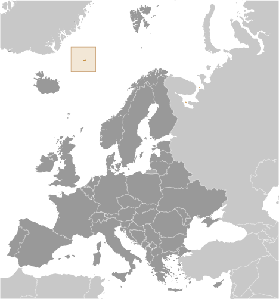
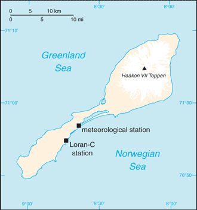
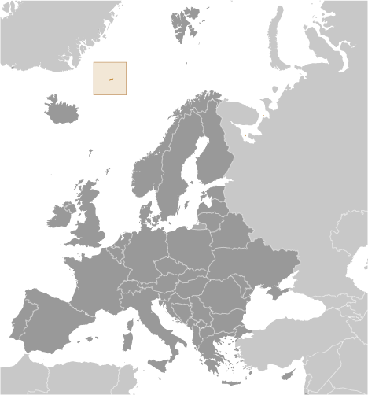
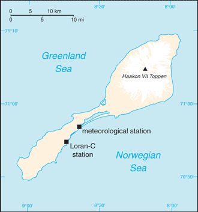

Europe :: JAN MAYEN
Introduction :: JAN MAYEN
-
This desolate, arctic, mountainous island was named after a Dutch whaling captain who indisputably discovered it in 1614 (earlier claims are inconclusive). Visited only occasionally by seal hunters and trappers over the following centuries, the island came under Norwegian sovereignty in 1929. The long dormant Beerenberg volcano, the northernmost active volcano on earth, resumed activity in 1970 and the most recent eruption occurred in 1985.
Geography :: JAN MAYEN
-
Northern Europe, island between the Greenland Sea and the Norwegian Sea, northeast of Iceland71 00 N, 8 00 WArctic Regiontotal: 377 sq kmland: 377 sq kmwater: 0 sq kmcountry comparison to the world: 206slightly more than twice the size of Washington, DC0 km124.1 kmterritorial sea: 12 nmcontiguous zone: 24 nmexclusive economic zone: 200 nmcontinental shelf: 200-m depth or to the depth of exploitationarctic maritime with frequent storms and persistent fogvolcanic island, partly covered by glaciersmean elevation: NAelevation extremes: lowest point: Norwegian Sea 0 mhighest point: Haakon VII Toppen on Beerenberg 2,277 mnote: Beerenberg volcano has numerous peaks; the highest point on the volcano rim is named Haakon VII Toppen, after Norway's first king following the reestablishment of Norwegian independence in 1905noneagricultural land: 0%arable land 0%; permanent crops 0%; permanent pasture 0%forest: 0%other: 100% (2011 est.)0 sq km (2012)dominated by the volcano Beerenbergvolcanism: Beerenberg (2,227 m) is Norway's only active volcano; volcanic activity resumed in 1970; the most recent eruption occurred in 1985pollutants transported from southerly latitudes by winds, ocean currents, and rivers accumulate in the food chains of native animalsbarren volcanic spoon-shaped island with some moss and grass flora; island consists of two parts: a larger northeast Nord-Jan (the spoon "bowl") and the smaller Sor-Jan (the "handle"), linked by a 2.5 km-wide isthmus (the "stem") with two large lakes, Sorlaguna (South Lagoon) and Nordlaguna (North Lagoon)
People and Society :: JAN MAYEN
-
no indigenous inhabitantsnote: personnel operate the Long Range Navigation (Loran-C) base and the weather and coastal services radio station
Government :: JAN MAYEN
-
conventional long form: noneconventional short form: Jan Mayenetymology: named after Dutch Captain Jan Jacobszoon MAY, one of the first explorers to reach the island in 1614territory of Norway; since August 1994, administered from Oslo through the county governor (fylkesmann) of Nordland; however, authority has been delegated to a station commander of the Norwegian Defense Communication Service; in 2010 Norway designated the majority of Jan Mayen as a nature reservethe laws of Norway, where applicable, applythe flag of Norway is used
Economy :: JAN MAYEN
-
Jan Mayen is a volcanic island with no exploitable natural resources, although surrounding waters contain substantial fish stocks and potential untapped petroleum resources. Economic activity is limited to providing services for employees of Norway's radio and meteorological stations on the island.
Communications :: JAN MAYEN
-
a coastal radio station has been remotely operated since 1994 (2008)
Transportation :: JAN MAYEN
-
1 (2013)country comparison to the world: 222total: 11,524 to 2,437 m: 1 (2013)none; offshore anchorage only
Military and Security :: JAN MAYEN
-
defense is the responsibility of Norway
Transnational Issues :: JAN MAYEN
-
none